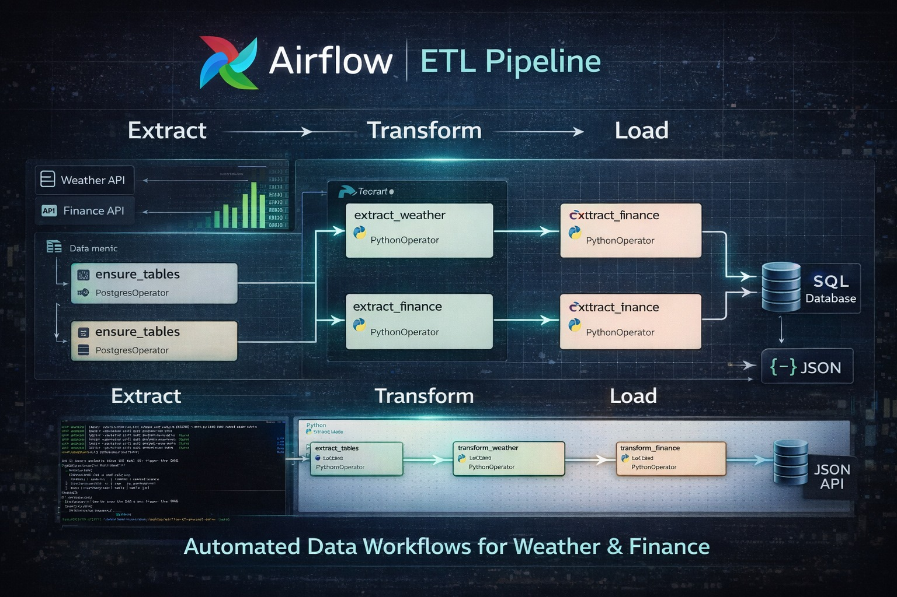
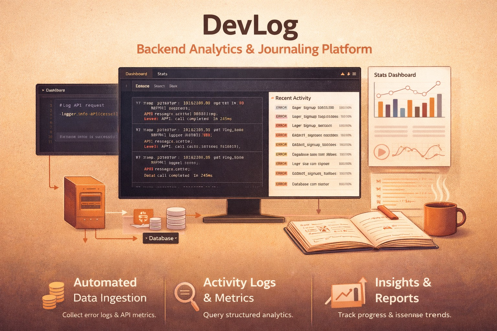
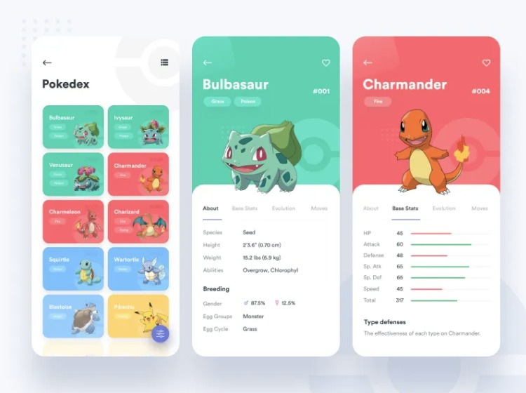

Scalable backend market analytics platform using Python and FastAPI that retrieves real-time financial and stock market data via external APIs, processes it through custom business logic and data pipelines, and exposes actionable insights through a secure, high-performance REST API. Emphasized modular architecture, clean API design, performance optimization, and real-world usability for data-driven decision making.

An automated finance ETL pipeline using Apache Airflow to orchestrate scheduled extraction, transformation, and loading of real-time and historical market data from multiple APIs. The pipeline processes weather and financial datasets through Python-based transformations, enabling structured analytics.

Backend analytics and logging platform using automated data ingestion, processing pipelines, and API-driven data access.Data pipelines are designed for scalability and automation, supporting scheduled ingestion, modular processing, and reliable storage through API-driven services and database-backed architecture.
BeatFighters is a competitive turn-based rhythm combat game where players create musical attack patterns and defend against their opponent’s rhythm. Each directional input represents both a drum sound and a physical fighting move. The result is a fast-paced musical duel where timing, creativity, and strategy determine the winner.

Pokédex application that allows users to search, filter, and explore Pokémon using real-time data from a public REST API. The project emphasizes API integration, asynchronous data fetching, clean UI design, and efficient state management, delivering a fast and user-friendly experience. Designed to showcase frontend engineering skills, JavaScript proficiency, and scalable web application architecture.